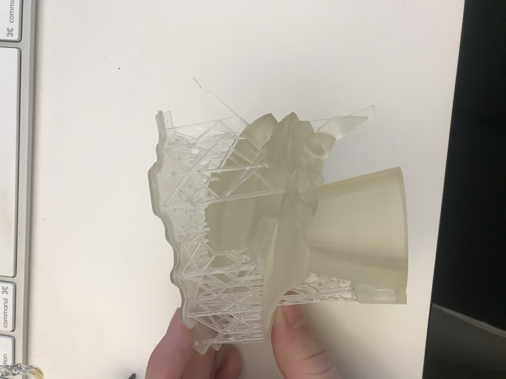
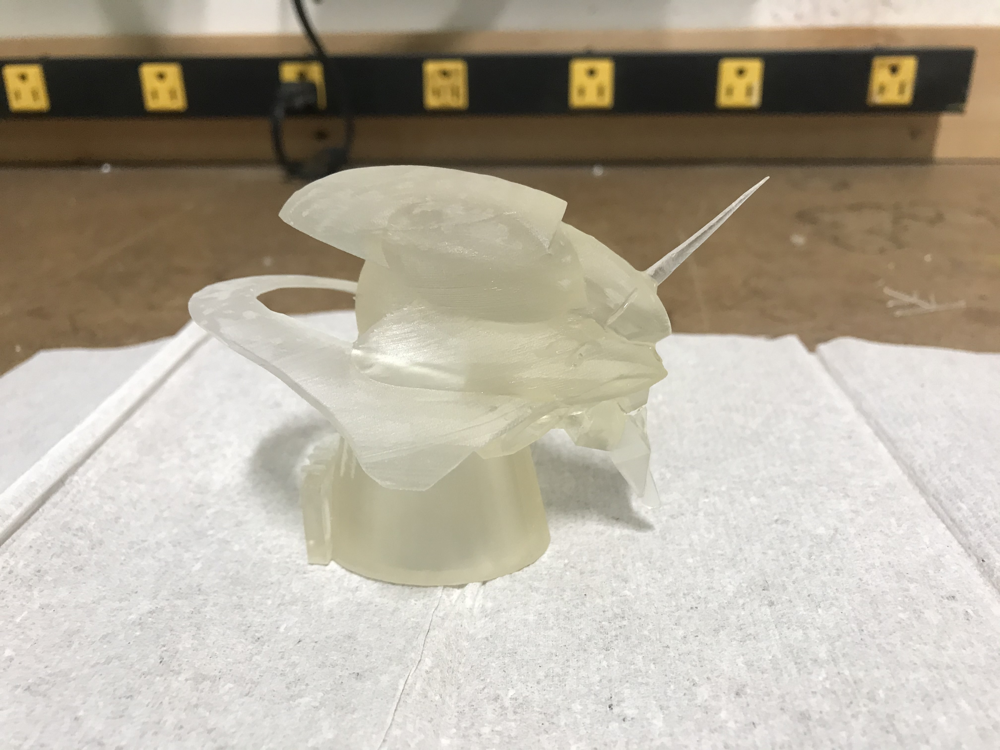
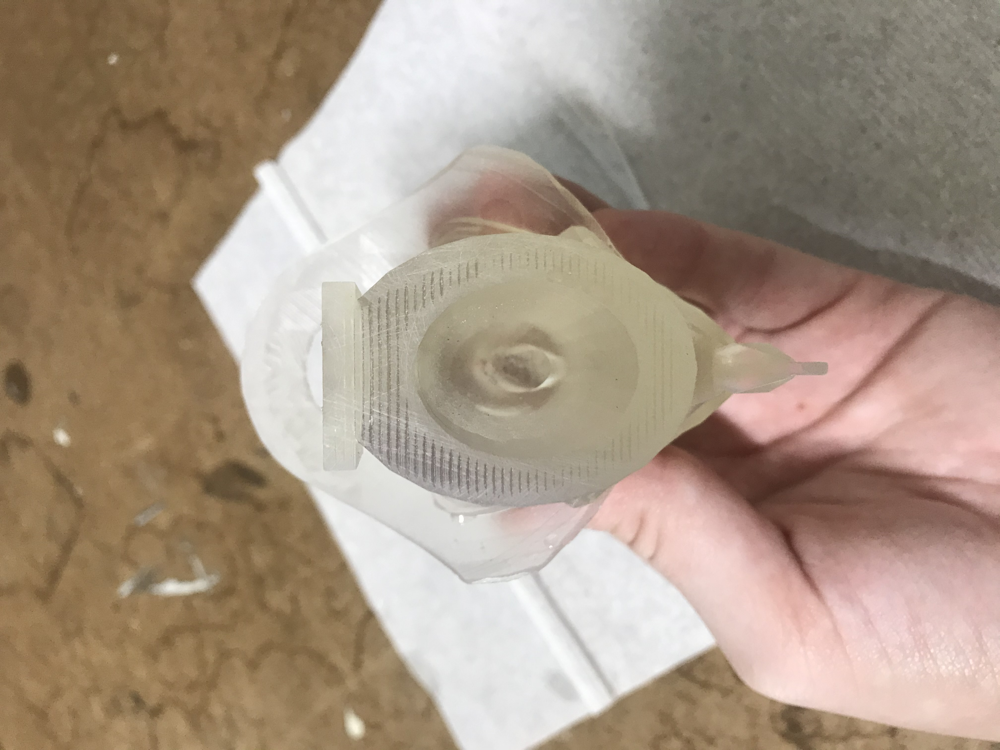
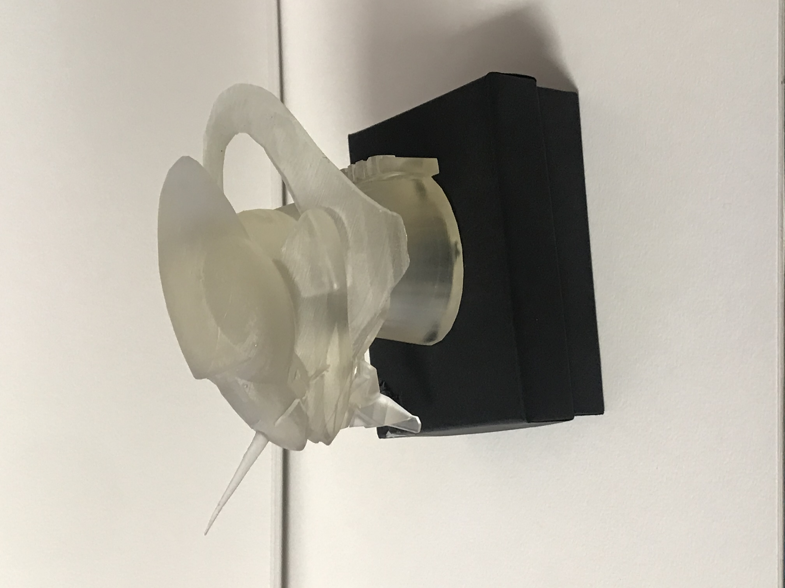
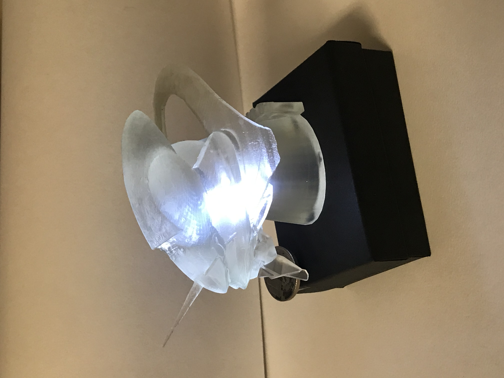

In the beginning of this project, it was difficult to decide on what I wanted to do for my model. Fortunately, I am a mega nerd for anime, and was inspired by my favorite anime, Neon Genesis Evangelion, and a character/mecha from it. I present the head of Eva Unit 01. The start of the models life started in handy dandy TinkerCAD! After I finished my model in TinkerCAD I moved on to filling my gaps and fixing the model to be prepared for printing. Unfortunately, I ran into some big gaps caused by super thin pieces of my piece. The head piece would not render smoothly and was going to cause major issues if I printed it that way.

To improvise, I added some large solid structures into the head piece and mouth (not that you can see the piece, but it is there). It did alter the original style I wanted, but I prefer having a strong structure rather than a fragile piece. Then my mesh mixer was happy and said it was pristine for printing!

Since printing takes a while, we went into constructing our circuit boards for the LEDs that would be going into our hollow points within our models. While building my board, I was quickly reminded of the term 'trail and error', as I did fail on my first board. Luckily, I learned how to sodder pretty quickly withing my first run through, so, constructing my second board did not take as long as failing on my first board!


After the board was made and prepared to partner with my model, my model had also finsihed printing! Below are the before and after pictures of the model fresh off the print and then after removing supports and sanding it down. The third picture shows my hollow points withing my model. I did mine a bit different and just hallowed out the entire base of my model and added a deeper hallow point in the 'face' of my model for my longer LED to sit in.
  After assembling my stand and putting the circuit board inside of it, I got down to securing my model to the stand and called it finished!
 